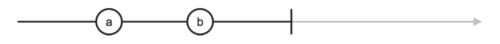
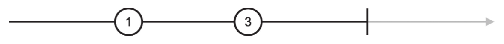
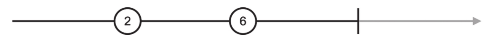
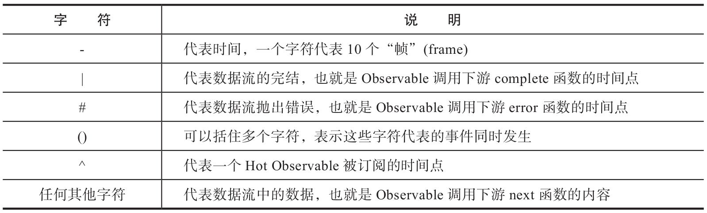
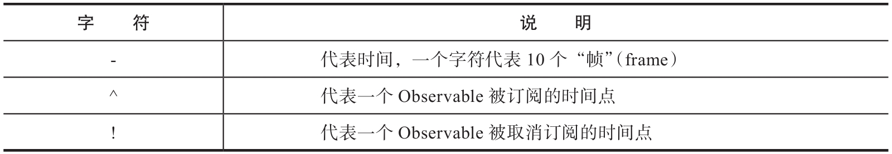

根据爱因斯坦的相对论，“时间只存在于观察者眼中”这句话的意思是说，时间只是一个相对的概念，与观察者在空间里的运动速度有关，观察者的存在决定了时间的流逝。现实的物理时间尚且如此，在计算机的世界里，时间更不是一个绝对的概念。在RxJS的世界里，也有自己的相对论，那就是：时间存在于Scheduler的控制之下。
在第11章中，我们介绍过RxJS中Scheduler可以控制Observable对象产生数据的时机和节奏，换句话说，Scheduler说现在是何年何月何日几时几分几秒，那Observable对象就认为现在就是何年何月何日几时几分几秒，Schduler时间已经流逝了100毫秒，那Observable就认为时间已经过去了100毫秒。总之，Scheduler完全可以把Observable玩弄于鼓掌之中。
既然Scheduler在RxJS的世界里拥有“操控时间”这样的神力，很自然让人想到，能不能利用这种神力来方便单元测试的编写呢？
事实上，RxJS提供这样一个特殊的Scheduler，就是方便在单元测试中篡改时间用的，这个Scheduler叫做TestScheduler。TestScheduler类继承自父类VirutalTime-Scheduler，从父类这个名字就可以看出，它拥有“操纵时间”的超能力。
在动漫作品里，“操纵时间”的能力无疑是最强的超能力，因为这个能力实在太强，一般只有终极大Boss才具备这样的能力，而且故事的作者往往限制角色这方面的超能力，在《JoJo的奇妙冒险》中，公认最强的替身超能力“世界”，也只不过能够让时间暂停5秒钟而已。不过，在RxJS的世界，TestScheduler对时间的操纵能力几乎是无限的。
1.弹珠测试
TestScheduler带来一种全新的测试RxJS数据流的方式，称为弹珠测试（Marble Test），利用字符串来代表弹珠图，让测试用例中的数据流十分清晰。
还是用一个实际例子来看一看吧，单元测试的代码如下：
import Rx, {TestScheduler} from 'rxjs';
import {assert} from 'chai';
let scheduler;
describe('Observable', () => {
beforeEach(() => {
scheduler = new TestScheduler(assert.deepEqual.bind(assert));
});
it('should parse marble diagrams', () => {
const source = '--a--b--|';
const expected = '--a--b--|';
const source$ = scheduler.createColdObservable(source);
scheduler.expectObservable(source$).toBe(expected);
scheduler.flush();
});
});
这段代码的内容比较多，需要分段来解释：
·在文件的头部，从rxjs中除了导入Rx，还导入了TestScheduler，这是RxJS单元测试的主角，掌握着单元测试中的“时间”。从chai中导入的assert，将会和TestScheduler配合使用。
·TestScheduler和第11章中介绍的async、asap还有queue这些Scheduler不同，TestScheduler是不能重用的，每个测试用例的运行都需要重新创建一个Test-Scheduler实例，这就是为什么在文件模块的位置定义了一个scheduler变量，这个变量在每个测试用例执行之前都会被赋值一个全新的TestScheduler实例。如果不这么做的话，不同测试用例执行过程中的时间就会错乱，无法得到预期的结果。
·在describe中多了一个beforeEach函数调用，beforeEach是Mocha提供的一个函数，作用是让所处的测试套件中所有测试用例执行之前执行一个函数，通常这个函数就是所有测试用例共同的环境准备工作。既然每个测试用例都需要一个全新TestScheduler实例，很自然就用beforeEach来创建TestScheduler实例并赋值给scheduler变量。
在本章接下来的所有单元测试用例中，除非特殊说明，scheduler指的都是通过beforeEach创建的TestScheduler实例。
TestScheduler的构造函数接受一个参数来指定判定两个对象是否相等的方法，在这里我们使用chai的assert方法deepEqual，deepEqual会根据递归进行深层比较，所以被比较的对象无论有多少层属性嵌套都没有关系。值得注意的是，不能直接把assert.deepEqual丢给TestScheduler，因为assert.deepEqual执行时要求this是assert才能正常工作，但是assert.deepEqual作为参数传递出去之后，对接受者来说只是一个函数而已，直接调用时this不会绑定到assert上，所以，需要使用bind把assert.deepEqual和assert绑定之后再传给TestScheduler：
scheduler = new TestScheduler(assert.deepEqual.bind(assert));
然后我们看目前唯一的一个测试用例，在这个测试用例中，第一个步骤准备阶段，创造了两个变量source和expect，这两个变量都是字符串，读者看到这样的字符串是不是觉得有点眼熟？
const source = '--a--b--|'; const expected = '--a--b--|';
上面的代码，对比图12-4所示的弹珠图，是不是清晰一些。

图12-4 source和expect示例
没错，代码中的字符串，其实就是弹珠图的ASCII字符表达方式。
字符串毕竟不可能画出特别漂亮的弹珠图，但是，不用过多说明，读者也应该能够猜得出来，横杠字符（-）代表没有数据只有时间流逝，一个字符a代表一个数据产生，一个竖杠字符（|）代表的是数据流的完结，虽然不是很漂亮，但是清晰明了，该有的信息都有。
上面的这个字符串弹珠图，明显代表的是一个异步产生数据的数据流，因为有横杠字符的存在，产生a之前，a和b之间，b和完结之间，都有时间差。
这样用字符串表达的弹珠图有什么用呢？可以被TestScheduler实例拿来创建Observable对象。
const source$ = scheduler.createColdObservable(source);
在测试用例的步骤二，利用TestScheduler实例的createColdObservable产生了source$，从source$的$字符后缀就看得出来，它是一个Observable对象，而createCold-Observable的参数source是一个字符串，也就是说createColdObservable利用一个字符串描述的弹珠图，产生了一个真正的Observable对象：
scheduler.expectObservable(source$).toBe(expected);
在步骤三中，通过scheduler的expectObservable函数来判定source$，下面这个判定语句很容易读，因为几乎可以直接按照字面意思翻译理解：scheduelr预期Observable对象source$是expected这样：
其中expected是一个字符串，值和source一样，所以，预期由source产生的Observable对象和expect一样也是很正确的。
读者可能注意到了，在这个测试用例中没有Observer，既然数据管道是懒执行，如果没有Observer那就不会真正有数据产生，不过有TestScheduler参与，并不需要显示添加Observer，测试用例最后一行的flush，就是开始所有TestScheduler控制下数据流的运转：
scheduler.flush();
通过Mocha运行这段单元测试，可以看到结果正确：
Observable ✔ should parse marble diagrams
上面的单元测试其实没有测试任何操作符，只是展示TestScheduler的功能，接下来，我们来实际测试一个RxJS自带的map操作符。
map是一个转化类操作符，对于上游Observable的每个数据，将其转化为另一个数据扔给下游，测试用例必须验证map的这个转化过程，这样一来，字符串代表的弹珠图中的a和b这样的标示符必须要有具体的值才能体现数据的转化。
TestScheduler的相关方法支持这种功能，最终的测试用例代码如下：
it('should work with map operator', () => {
const source = '-a-b|';
const expected = '-a-b|';
const source$ = scheduler.createColdObservable(source, {a: 1, b: 3});
scheduler.expectObservable(source$.map(x => x * 2)).toBe(expected, {
a: 2, b: 6
});
scheduler.flush();
});
和前面的测试用例相比，这个测试用例的主要变化，就是createColdObservable和toBe两个函数都带第二个参数，第二个参数是一个对象，对象中每个属性代表第一个参数字符串弹珠图中的一个数据标示。
对于createColdObservable，第一个参数是字符串-a-b|，会用第二个参数的a属性值去替换第一个参数中的a，用b的属性值去替换b，最终createColdObservable产生的是如图12-5所示的数据流。

图12-5 createColdObservable产生的数据流
同样的，在toBe中，第二个参数对象的属性值会被用来替换第一个字符串参数中的数据标示，也就是如图12-6所示的数据流图。

图12-6 toBe预期的数据流
因为map的作用就是把第一个数据流中的所有数据乘以2传给下游，正好和预期的数据流一致，所以这个单元测试可以通过。
读者看到这里可能会想，为什么需要createColdObservable和toBe的第二个参数呢？为什么不直接在字符串弹珠图里用上数字，就像下面的代码这样：
it('should work with map operator on string', () => {
const source = '-1-3|';
const expected = '-2-6|';
const source$ = scheduler.createColdObservable(source);
scheduler.expectObservable(source$.map(x => x * 2 )).toBe(expected);
scheduler.flush();
});
但是这样单元测试用例会失败，出错提示显示，预期的第一个数据是字符串2，但是得到的却是数字2。
这是因为，在字符串形式的弹珠图里，数字字符代表的依然是字符串类型，也就是说，source吐出的两个数据是字符串1和3，而不是数字1和3，不过，经过map的转化，每个数据变成了数字类型，因为，在JavaScript中字符串乘以一个数字，会先尝试把这个字符串转化为数字，然后再做乘法，所以，经过map之后，产生的Observable对象吐出的就是数字2和6。然而expect的字符串弹珠图里依然代表的是字符串2和6，所以在判定阶段就会出错。
对上面的单元测试用例稍作修改就可以让其通过，就是在map的参数函数中把结果用toString转化为字符串，如下所示：
scheduler.expectObservable(source$.map(x => (x * 2).toString())) .toBe(expected);
当然，这样显得非常笨拙，而且，即使只想测试字符串，字符串弹珠图中也无法支持包含多个字符的字符串，比如对于这样的表达--abc--|，不要以为会产生一个字符串数据abc，实际上会产生三个字符串数据，第一个是a，第二个是b，第三个是c。
毫无疑问，只用包含一个字符的字符串来测试操作符也是很不全面的，更何况，所有通用的操作符都不局限于处理字符串数据，所以，使用createColdObservable和toBe的第二个参数很有意义，可以用来帮助测试各种类型的数据。
2.字符串弹珠语法
在上一节我们领教了TestScheduler带来的弹珠测试方法，最神奇的就是用字符串来表示一个弹珠图，这是一种领域专用语言（Domain Specific Language，DSL），有自己的一套语法。
弹珠测试用的字符串中每一个字符都有特殊含义，如表12-1所示。
表12-1 弹珠语法说明

利用一些具体例子来说明更容易理解，首先来介绍横杠字符-。一个横杠代表10个“帧”，这里的一“帧”可以理解为虚拟时间中的一毫秒，一个横杠代表的就是10毫秒。下面的测试用例，可以证明这一点：
it('create virtual time', () => {
let time = scheduler.createTime('-----|');
assert.equal(50, time);
});
TestScheduler的实例函数createTime可以计算字符串弹珠图代表的数据流总共持续多长时间才完结，在上面的例子中，字符串弹珠图竖杠字符之前有5个横杠字符，5*10=50，所以最后计算出的时间是50。
读者可能有一个疑问：为什么一个横杠字符代表10帧？为什么不是代表1帧？
现在似乎没人能回答为什么，我猜也许是受了早年Basic语言的影响。最早的Basic语言每一行前面还要写指令编号，习惯上也不是1、2、3这样递增1的序列，而是10、20、30这样递增10的序列，因为早期代码编辑器的局限，如果要插入新的一行代码，并不能像现在这样就在要插入的位置加一行就行了，那个时候只能在文件结尾添加代码，但是Basic代码的执行会按照指令号的顺序，所以要在10和20号指令之间插入一行指令，就在文件结尾加一个编号15的语句就可以了，但是，指令编号只能是整数，如果指令编号是1和2，就没法在中间插一个指令了。
不管怎样，一个横杠字符代表10帧这个设计也并没有什么大问题，如果你真的感觉很不爽，也可以通过修改TestScheduler.frameTimeFactor的值来篡改一个横杠字符所代表的意义，如下面的代码所示：
it('tweak frameTimeFactor', () => {
const originalTimeFactor = TestScheduler.frameTimeFactor;
TestScheduler.frameTimeFactor = 1;
let time = scheduler.createTime('-----|');
assert.equal(5, time);
TestScheduler.frameTimeFactor = originalTimeFactor;
});
同样的字符串弹珠图，在把TestScheduler.frameTimeFactor改为1之后，代表的数据流经历的时间变成了5。
当然，很不建议去修改TestScheduler.frameTimeFactor，因为这是一个TestScheduler类级别的属性，修改了之后会影响其他所有测试实例，可是其他开发者普遍都接受一个字符代表10帧的设定，篡改了这个设定只会带来麻烦。
在上面的单元测试用例中，也是预先存下TestScheduler.frameTimeFactor的默认值到一个变量originalTimeFactor里，在执行完验证过程之后利用这个变量恢复了TestScheduler.frameTimeFactor的原始值。
从上面的例子也可以看出，代表数据流完结的竖杠字符不占用时间的。
如果单独一个竖杠字符的弹珠图，代表的就是empty这个操作符产生的Observable对象，如下面的测试实例所示：
it('empty stream', () => {
const source$ = Rx.Observable.empty();
const expected = '|';
scheduler.expectObservable(source$).toBe(expected);
scheduler.flush();
});
同样，单独一个#字符的弹珠图，代表的就是throw这个操作符产生的Observable对象，如下所示：
it('error stream', () => {
const source$ = Rx.Observable.throw('error');
const expected = '#';
scheduler.expectObservable(source$).toBe(expected);
scheduler.flush();
});
如果一个字符串弹珠图中不包含竖杠字符|，也不包含字符#，那这个弹珠代表一个永远不会完结也不会出错的数据流，比如-a-b，可以认为后面自动接上了无限长的横杠字符，-a-b------，永不完结。
如下面的代码所示，如果字符串弹珠图只包含横杠字符，那一个横杠字符和任意多横杠字符没有什么区别，代表的都是never这个操作符产生的数据流：
it('never stream', () => {
const source$ = Rx.Observable.never();
const expected = '-----'; //这里有多少-字符真的不重要
scheduler.expectObservable(source$).toBe(expected);
scheduler.flush();
});
有了TestScheduler我们可以控制时间，现在来解决之前遇到的问题，如何测试interval操作符产生的数据流。
我们知道一个字符代表10帧，也就相当于10毫秒，那么我们就看怎么用字符串弹珠图来表示interval（10）产生的数据流。选择interval的参数为10是因为不想写太长的字符串，理论上我们当然也可以表示interval（1000），但是那光是第一个数据前面就要写100个横杠字符，相信没有人愿意喜欢这么写代码。
interval产生的数据流永不完结，我们也没法写一个无限长的字符串，所以借助take这个操作符，只拿前4个数据，也就是间隔10毫秒产生的0、1、2、3四个整数，用字符串弹珠图表示是下面这样：
-012(3|)
可能读者问，为什么不是下面这样？
-0-1-2-3|
因为除了代表完结的|和代表出错的#不占用时间，不管是横杠字符-还是字母数字字符都占用10帧，也就是说，等待10帧之后产生了数据1，这个字符1的存在，表示下一个字符要再等10帧才产生，所以0和1之间就没有横杠字符间隔，不然就不只是间隔10帧了。
同样，最后一个字符3的存在，也表示产生数据3，然后等待10帧，如果在后面直接写|，代表产生数据3之后再等10帧才完结，这不是interval的行为，interval会在产生最后一个数据之后立刻完结，也就是产生数据3和完结是同时发生的。根据弹珠语法，如果要表示两个事件同时发生，就用圆括号（）把它们包起来。
最终展示用TestScheduler来控制interval的测试用例如下：
it('interval in TestScheduler', () => {
const source$ = Rx.Observable.interval(10, scheduler)
.take(4).map(x => x.toString());
const expected = '-012(3|)';
scheduler.expectObservable(source$).toBe(expected);
scheduler.flush();
});
因为interval产生的是整数数值类型数据，所以用map做了一个转化，转化为字符串类型，这样才可以和expected中的字符数据进行比较。
值得一提的是，圆括号字符对（）虽然自身并不是数据，但是在弹珠图中也是占用时间帧的，看下面的代码示例：
it('should work with merge operator', () => {
const source1 = '-a----b---|';
const source2 = '-c----d---|';
const expected = '-(ac)-(bd)|';
const source1$ = scheduler.createColdObservable(source1);
const source2$ = scheduler.createColdObservable(source2);
const mergedSource$ = Rx.Observable.merge(source1$, source2$);
scheduler.expectObservable(mergedSource$).toBe(expected);
scheduler.flush();
});
上面的测试用例展示了merge这个operator的用法，合并的是source1和source2，source1在第10帧的时候产生数据a，在第70帧的时候产生数据b；source2在第10帧的时候产生数据c，在第70帧的时候产生数据d。合并的结果，应该在第10帧的时候同时产生a和c，在第70帧的时候同时产生b和d。
可以注意到，expected中的（ac）代表第10帧同时产生a和c，因为圆括号开始于第二个字符的位置，但是圆括号也占时间帧，加上中间的a和c就占用了4个字符，也就是40帧，所以后面一个横杠字符之后就是（bd）了：
const expected = '-(ac)-(bd)|';
假如我们想要测试下面的source1和source2合并场景，也就是数据之间只有20帧的间隔，会发现根本没法实现：
const source1 = '-a-b-|'; const source2 = '-c-d-|';
没法实现是因为合并之后的字符串弹珠图没法写，就像下面这样，用圆括号包起a和c之后，就把下一个事件推到了50帧，这时候b和d都已经在source1和source2产生了，无论怎么写都已经迟了：
const expected = '-(ac)(bd)|'; //这不是预期merge的结果
这看起来是一个麻烦，但是弹珠语法这样定义合理，因为让除代表终结的|和#之外所有字符都占时间帧容易比较，在代码中，我们在不同代码行中写的字符串，只要上下对齐，就很容易比对时间：
const source1 = '-a----b---|'; const source2 = '-c----d---|'; const expected = '-(ac)-(bd)|';
还有一个字符^很特殊，它只在Hot Observable中出现，代表Hot Observable被订阅的时间。
Hot Observable和Cold Observable不一样，Cold Observable从被订阅开始产生数据，所以实际上字符串弹珠图的开始就是订阅时间，但是Hot Observable产生数据的动作和订阅无关，所以需要一个字符来代表订阅时机，也就是这个字符^。
提示
字符^往往被称为“尖头字符”或者简称“尖”，或者根据键盘输入方法被称为“Shift6”，其实这个字符有一个正式名称，叫caret。
在上面我们展示了merge的过程，但是被merge的是两个Cold Observable，现在我们测试一下merge对Hot Observable的合并是否正确，对应的测试用例代码如下：
it('should work with hot Observable', () => {
const source1 = '-a-^b----|';
const source2 = '---^---c-|';
const expected = '-b--c-|';
const source1$ = scheduler.createHotObservable(source1);
const source2$ = scheduler.createHotObservable(source2);
scheduler.expectObservable(source1$.merge(source2$)).toBe(expected);
scheduler.flush();
});
在上面的代码中，因为要测试Hot Observable，所以不再使用createColdObservable，而是使用TestScheduler实例函数createHotObservable，这个函数接受的字符串里可以包含caret字符^。
如果是createColdObservable，参数中包含caret字符会立刻出错，因为这个字符只对于Hot Observable才有意义。
对于source1，在^前面也产生了数据a，但是因为这是在被subscribe之前产生的，肯定不会出现在合并之后的数据流中：
const source1 = '-a-^b----|'; const source2 = '---^---c-|';
这个测试用例测试的是merge这个操作符，merge的操作肯定是同时对上游两个Observable对象进行subscribe，为了便于阅读，source2的^和source1的^要对齐。
同样，expected的字符串开始位置，为了比对方便最好也要和source1和source2的^字符上下对齐，为此我们需要在字符串前面填充一些空白符，让字符串和上游两个字符串中的数据对齐：
const expected = '-b--c-|';
还可以测试合并Hot Observable和Cold Observable，对于merge而言，上游是什么类型的Observable都能够处理，所做的只是订阅然后合并数据而已。需要注意的依然是要对齐字符串弹珠图，在下面的测试用例中，source2是一个Cold Observable，不包含字符^，所以开始的时间就是被订阅的时间：
it('should work with both hot and cold Observable', () => {
const source1 = '-a-^b----|';
const source2 = '----c-|';
const expected = '-b--c-|';
const source1$ = scheduler.createHotObservable(source1);
const source2$ = scheduler.createColdObservable(source2);
scheduler.expectObservable(source1$.merge(source2$)).toBe(expected);
scheduler.flush();
});
上面介绍的数据流中事件的弹珠测试，可以测试数据流中的时间流逝、调用next、调用complete和调用error这些场景，其实TestScheduler还支持对一个数据流被调用subscribe和被调用unsubscribe的测试，也就是订阅情景测试。
支持订阅功能，弹珠测试也有一套语法，只不过更加简单，只有三种字符，如表12-2所示。
表12-2 弹珠测试语法

进一步说明如下：
·横杠字符-的含义和之前的定义完全一样，默认代表10个时间帧的流逝。
·caret字符^代表的是被订阅，不过，和之前不一样，不局限于Hot Observable，对于Cold Observable一样也有被订阅的概念。
·感叹号字符！代表的是unsubscribe的动作，这个字符只会出现在订阅测试中。
测试一个数据流的订阅情景，我们只关心这个数据流什么时候被订阅，订阅了多久，什么时候被退订，并不关心数据流上产生了什么数据，所以用上面三个字符来表示弹珠图就足够。
通过TestScheduler的实例函数createColdObservable和createHotObservable产生的Observable对象有一个特殊属性subscription，通过这个属性我们可以检测订阅情景。
下面是一个测试concat的测试用例代码，concat会连接多个数据流的内容，当一个数据流完结的时候，就会退订这个数据流转而去订阅下一个数据流，我们预期每个数据流在完结的时候就会被退订：
it('check subscription marble', () => {
const source1 = '-a-b--|';
const source2 = '-c--d-|';
const expectedRes = '-a-b---c--d-|';
const expectedSub1 = '^-----!';
const expectedSub2 = '------^-----!';
const src1$ = scheduler.createColdObservable(source1);
const src2$ = scheduler.createColdObservable(source2);
scheduler.expectObservable(src1$.concat(src2$)).toBe(expectedRes);
scheduler.expectSubscriptions(src1$.subscriptions).toBe(expectedSub1);
scheduler.expectSubscriptions(src2$.subscriptions).toBe(expectedSub2);
scheduler.flush();
});
同样，为了便于代码对齐，我们在字符串前面填充空格，让几个字符串弹珠图的序列能够保持一致。
验证订阅情景的函数是expectSubscriptions，参数是被测Observable对象的subscriptions属性，如下所示：
scheduler.expectSubscriptions(src1$.subscriptions).toBe(expectedSub1);
同样的方法也可以验证src2$被订阅的时机。
订阅测试也适用于Hot Observable，如下面的代码所示：
it('check subscription marble of hot observable', () => {
const source = '^a-b--|';
const expectedRes = '-a-b--|';
const expectedSub = '^-----!';
const source$ = scheduler.createHotObservable(source);
scheduler.expectObservable(source$).toBe(expectedRes);
scheduler.expectSubscriptions(source$.subscriptions).toBe(expectedSub);
scheduler.flush();
});
只是，在Hot Observable中往往利用caret字符标出了被订阅的时间，所以再用包含caret字符的订阅弹珠图来测试，显得意义不大。
3.弹珠测试辅助工具包
TestScheduler能够让RxJS的测试变得极其轻松，但是让每个测试套件都要在beforeEach中创建一个TestScheduler显得很笨拙，每个测试用例的结尾还一定要调用TestScheduler的实例函数flush，如果忘了写的话，就会产生意想不到的结果。
要知道，单元测试本身就应该像是我们的一个机器人伙伴，应该尽量自动化帮我们完成检查任务，如果我们还要非常费心地去注意避免上面这些错误，那自动化的程度就降低了。
正因为如此，RxJS为了方便自己的开发，也在代码库中包含了辅助文件来方便自己的单元测试，对应文件在RxJS v5的代码库spec/helpers目录下，因为RxJS是用TypeScript编写的，所以对于spec/helpers目录下的辅助代码也是用TypeScript编写；不过，在v5最新的代码中，还有一个spec-js/helpers目录，包含的是转译之后产生的纯JavaScript代码，适用于测试纯JavaScript代码。
很可惜，目前RxJS发布的npm包中并不包含spec或者spec-js目录，所以，要使用这些辅助文件，也只能从RxJS的源代码库中直接把拷贝代码出来。
理解spec-js中被转译的代码并不容易，所以，在本书中提供了一个极简版的实现，在本书的GitHub代码库chapter-12/unit_testing/test/helpers/目录下可以找到。
我们的测试辅助文件主要有两个marble-testing.js和test-helper.js，前者提供弹珠测试相关的辅助函数，后者包含和Mocha测试框架相关的逻辑。
先来看marble-testing.js文件，这个文件导出一系列函数，这些函数的主要作用就是简化测试用例的编写，只要理解了上一节中介绍的单元测试方法，就不难理解这些简化了的函数的作用。
测试代码肯定会用到判定函数，我们使用的chai中的assert.deepEqual，因为弹珠测试产生的数据流对象需要内部每个属性都相同才能算相等，代码如下：
const chai = require('chai');
const {assert} = chai;
const assertDeepEqual = assert.deepEqual.bind(assert);
前面已经介绍过，每一个单元测试用例都需要一个独立的TestScheduler对象，因为每个TestScheduler对象都有特定测试过程的状态，如果不同测试用例共用一个TestScheduler对象，那不同测试用例的状态会纠缠在一起，结果完全不可预料。
之前我们通过Mocha测试套件的beforeEach函数来为每个测试用例创建TestScheduler对象，虽然好使，但是重复写这样的beforeEach看起来并不好。在marble-testing.js中，认为有一个全局变量rxTestScheduler，对于每个测试用例，rxTestScheduler变量总会是一个全新的TestScheduler对象，至于如何保证这一点，这不是marble-testing.js的责任，在test-helper.js中我们会详细介绍，在marble-testing.js的部分，我们只需要假设rxTestScheduler应该存在就可以了，访问这个全局变量的方式是通过global.rxTestScheduler。
注意
通常，使用全局变量或者全局函数并不是值得鼓励的做法，因为全局变量的滥用会带来很多问题，但是，对于框架性的功能，有时候又避免不了使用全局变量，比如Mocha中的describe、context和it就是全局函数。在这里使用rxTestScheduler，在测试框架中，就是希望有一个任意位置都能访问的TestScheduler对象，用全局变量是一个合理的方式。不过，如果使用全局变量，一定要避免命名冲突，在这里我们把保存TestScheduler对象的全局变量命名为rxTestScheduler，而不是像上一节的例子一样简单命名为scheduler，就是认为不大可能还有其他代码会想创建一个叫rxTestScheduler的全局变量。
利用TestScheduler实例来创建Hot Observable要使用createHotObservable函数，但是这个函数名实在有点长，而且这个函数是实例函数，需要先明确TestScheduler对象，既然我们已经假设存在一个全局变量rxTestScheduler，而且rxTestScheduler就是那个TestScheduler对象，那就可以创造一个辅助函数来代替冗长的重复代码。
我们给这个函数用一个简洁而且足够表达语义的命名hot，下面是实现代码：
function hot() {
if (!global.rxTestScheduler) {
throw 'tried to use hot() in async test';
}
return global.rxTestScheduler.createHotObservable.apply(
global.rxTestScheduler, arguments
);
}
hot预期会在测试用例中使用，test-helper.js会保证测试用例中rxTestScheduler会被初始化，如果hot用在其他代码中，那么，rxTestScheduler可能就并不指向同一个对象了，所以，最好还是考虑到这种情况，当开发者把hot函数用错位置的时候，抛出一个清晰的错误。
在上面的代码中，步骤如下：
1）检查global.rxTestScheduler是否存在，如果不存在，那就代表用错了地方。
2）调用global.rxTestScheduler.createHotObservable来创建数据流，因为这个函数包含多个参数，所以这里用了一个JavaScript语言的技巧，利用函数的apply方法来调用。
apply的第一个参数是global.rxTestScheduler，这是保证函数被调用的时候this指向的是TestScheduler对象；第二个参数是arguments，这是一个类似数组（但并不是真正数组）的对象，这样调用hot的所有参数就原原本本地传给了global.rxTestScheduler，而且到底有多少个参数我们并不关心。
如果执行环境支持ES6语法，其实也完全可以用展开操作符（spread operator）来处理arguments，像下面这样实现：
return global.rxTestScheduler.createHotObservable(...arguments);
读者可以根据自己的执行环境是否支持ES6来决定用什么方式，在本书的例子中，为了保证通用性，默认使用的是传统的apply方式。
利用同样的原理，我们在marble-testing.js中也添加了一个cold函数，作用是利用TestScheduler创建一个Cold Observable，代码如下：
function cold() {
if (!global.rxTestScheduler) {
throw 'tried to use cold() in async test';
}
return global.rxTestScheduler.createColdObservable.apply(
global.rxTestScheduler, arguments
);
}
cold和hot实现唯一的区别就是出错提示中文字用的是cold，另外调用global.rxTestScheduler的函数是createColdObservable。
同样，也实现了一个createTime的简易辅助函数，既然是一个新的函数，那函数的命名就更加简短，叫time，代码如下：
function time(marbles) {
if (!global.rxTestScheduler) {
throw 'tried to use time() in async test';
}
return global.rxTestScheduler.createTime.apply(
global.rxTestScheduler, arguments
);
}
上面的hot、cold和time应用在测试用例的步骤二中，也就是调用被测试对象的步骤中。在步骤三中，会用上TestScheduler的实例函数expectObservable和expectSubscriptions，这两个函数的命名虽然比较长，但是已经十分精简了，我们能做的只能是省略每次要应用一个TestScheduler对象，所以，创建的两个辅助函数依然保留原名，代码如下：
function expectObservable() {
if (!global.rxTestScheduler) {
throw 'tried to use expectObservable() in async test';
}
return global.rxTestScheduler.expectObservable.apply(
global.rxTestScheduler, arguments
);
}
function expectSubscriptions() {
if (!global.rxTestScheduler) {
throw 'tried to use expectSubscriptions() in async test';
}
return global.rxTestScheduler.expectSubscriptions.apply(
global.rxTestScheduler, arguments
);
}
最后，这里把所有定义的函数全部导出，代码如下，这些导出的函数会被test-helper.js函数来处理：
module.exports = {
hot: hot,
cold: cold,
time: time,
expectObservable: expectObservable,
expectSubscriptions: expectSubscriptions,
assertDeepEqual: assertDeepEqual
};
为了通用性，使用了CommonJS的导出方式，在支持ES6的环境中，可以使用下面的方式：
export {hot, cold, time, expectObservable, expectSubscriptions, assertDeepEqual};
接下来再来看test-helper.js，这个文件中会对Mocha的测试框架做一些修改。
首先，导入marble-testing.js中的函数，将它们全部放到global对象上，也就是让hot、cold、expectObservable这些函数全部成为了全局函数，这样在测试用例中就可以直接使用：
const marbleHelpers = require('./marble-testing');
const {hot, cold, time, expectObservable, expectSubscriptions, assertDeepEqual} = marbleHelpers;
global.rxTestScheduler = null;
global.cold = cold;
global.hot = hot;
global.time = time;
global.expectObservable = expectObservable;
global.expectSubscriptions = expectSubscriptions;
然后，我们希望改进Mocha自带的测试用例方法it，让它能够自动帮我们完成两件工作：
·在开始测试之前创建TestScheduler实例。
·在测试之后调用TestScheduler的实例函数flush。
如果修改原有的it函数的实现，是过于侵入式的做法，所以，最好还是创建一个新的函数，在这个新的函数中，调用Mocha自带的it，同时添加想要附加的功能，这个新的函数代码如下所示：
const originaIt = global.it;
const testCase = function(description, fn) {
if (fn.length === 0) {
originaIt(description, function() {
global.rxTestScheduler = new TestScheduler(assertDeepEqual);
try {
fn();
global.rxTestScheduler.flush();
} finally {
global.rxTestScheduler = null;
}
});
} else {
originaIt.apply(this, arguments);
}
};
这个函数只不过是对Mocha的it进行包装，所以首先我们将Mocha的全局函数it存在originalIt变量中。
然后，testCase表现出和it一样的函数签名，支持两个参数，第一个参数是字符串的描述description，第二个参数是真正的测试过程。
如果利用TestScheduler来进行测试，那么即使涉及RxJS的异步操作，因为TestScheduler操纵时间的强大能力，整个测试过程其实也并不需要异步进行，换句话说，it的第二个函数参数，犯不着带上done这个参数。如果带了done这个参数，那要么是开发者单元测试代码写错了，要么就是根本不想利用TestSchduler的超能力，这种情况下，最好是不用TestScheduler，就把测试过程当一个普通的单元测试处理可以。
因为上面的原因，testCase函数做得第一件事就是判断第二个参数fn是否有参数，我们知道JavaScript中函数被调用时参数个数是可变的，但是，每个函数声明部分的参数个数却是确定的，可以通过函数对象的length属性来判断，所以，只要fn.length不为0，那就认为测试函数用上了done函数，也就可以直接使用Mocha自带的it实现方法，如下所示：
if (fn.length === 0) {
//只有fn不带任何参数才调用到个代码分支
} else {
originaIt.apply(this, arguments);
}
相反，如果fn.length为0，那就表示该TestScheduler上场了。
为了保证fn函数被执行时有一个已经构造好的TestScheduler实例，而且在fn运行完之后会自动驱动这个TestScheduler实例的运行，最后把全局变量rxTestScheduler清空，所以，正常的步骤是下面这样：
global.rxTestScheduler = new TestScheduler(assertDeepEqual); fn(); global.rxTestScheduler.flush(); global.rxTestScheduler = null;
不过，从测试框架的角度来说，要预期到所有可能的情况，包括测试用例写得有问题抛出错误的情况，因为fn到底怎么写，不是我们写测试框架时能够决定的。
像上面的实现方式，当fn因为某种原因抛出异常时，后面两行就不会执行，这样一来，全局变量rxTestScheduler也就不会被清空。还记得在marble-testing.js中hot和cold那些函数的实现吗？这些函数就靠rxTestScheduler来判断是否在一个利用TestScheduler的测试过程中，如果一个测试用例因为抛出异常而没有清空rxTestScheduler，那后面接着执行一个错误使用hot或者cold的函数，使用者会很不容易发现用错了。
因为上面的原因，所以我们改进这段代码，如下所示：
global.rxTestScheduler = new TestScheduler(assertDeepEqual);
try {
fn();
global.rxTestScheduler.flush();
} finally {
global.rxTestScheduler = null;
}
这样一来，即使fn抛出了异常，rxTestScheduler也会被清空，留下一个清洁的全局环境。
最后，需要把新定义的testCase作为全局变量暴露出去，这样在单元测试代码中就可以像使用it一样使用它了，就像下面这样，应用test-helper.js，之后就不用再管TestScheduler对象的管理：
require('./helpers/test-helper');
理想情况下，可以用testCase覆盖掉全局变量it，像下面这样：
global.it = testCase;
可是，实际上Mocha在每次执行一个测试文件的时候，都会重新把全局变量it赋值为自己默认的实现，这样一来，如果有超过两个测试文件，那么第一个引入test-helper.js的测试文件可以使用我们定制的it函数，但是其他测试文件访问全局变量it依然不是我们定制的it函数。
因此，把it赋值给全局变量test，如下所示，这样我们在测试RxJS时用test而不用it：
global.test = testCase;
至此，我们模仿RxJS的TypeScript实现，完成了一个最小功能的纯JavaScript测试工具包，然后在测试文件中，只需要引入对应的test-helper.js文件，就可以简化测试用例的编写，下面是代码示例：
require('./helpers/test-helper');
const Rx = require('rxjs');
describe('Observable', () => {
test('should work with map operator', () => {
const source = '-a-b|';
const expected = '-a-b|';
const source$ = cold(source, {a: 1, b: 3});
expectObservable(source$.map(x => x * 2)).toBe(expected, {
a: 2, b: 6
});
});
});